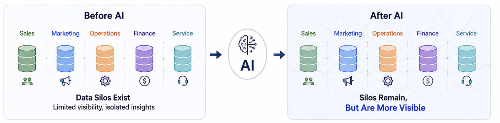
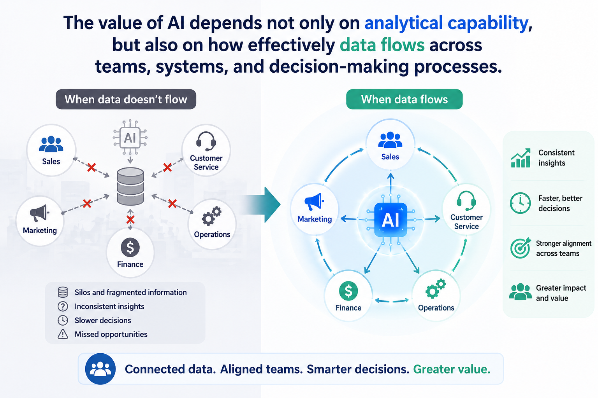

Data Silos: The Bottleneck Behind Enterprise AI
AI greatly improves analysis and operational efficiency
🤖 In the AI era, organizations are becoming increasingly capable of accelerating analysis,
automating workflows, and improving operational efficiency through data and AI technologies.
Many organizations today already possess enormous amounts of data across departments, systems, and platforms.
However, despite increasing investments in AI, automation, and analytics, a fundamental question still remains:
Can data actually flow effectively across the organization?
👀 One of the most underestimated organizational challenges is longer be the lack of data — but the existence of data silos. AI does not eliminate fragmentation. In many cases, it makes existing data silos more visible.

In the AI era, organizations often no longer suffer from a lack of analytical capability, as AI continues to accelerate speed, automation, and decision-support capabilities. However, when underlying data silos remain unresolved, organizations may still struggle with coordination, alignment, communication, and effective execution.
Data Silos Undermine Organizational Effectiveness
🤔 When data remains fragmented across teams, systems, and operational processes, the consequences are often experienced far beyond the data itself:
- inconsistent information across channels, teams, and departments
- duplicated work and operational inefficiencies
- unclear ownership and accountability
- slower decision-making despite faster analytical tools
- fragmented customer experiences and reduced organizational trust
In the AI Era, Seamless Data Flow Matters More Than Ever
📌 The value of AI depends not only on analytical capability, but also on how effectively data flows across teams, systems, and decision-making processes.
One thing I increasingly believe is that, in the AI era,
competitive advantage will not come only from having more data or more advanced models,
but from building organizations where information can flow effectively across teams, systems, and decision-making processes.
